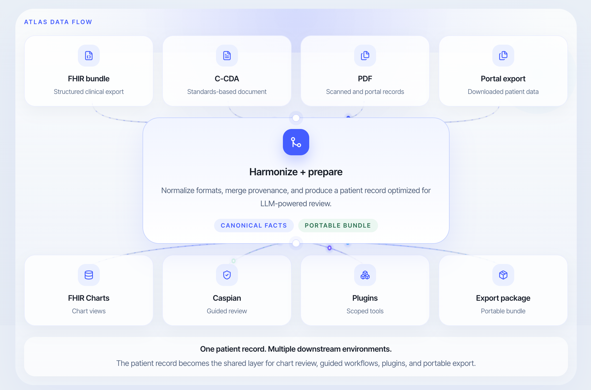
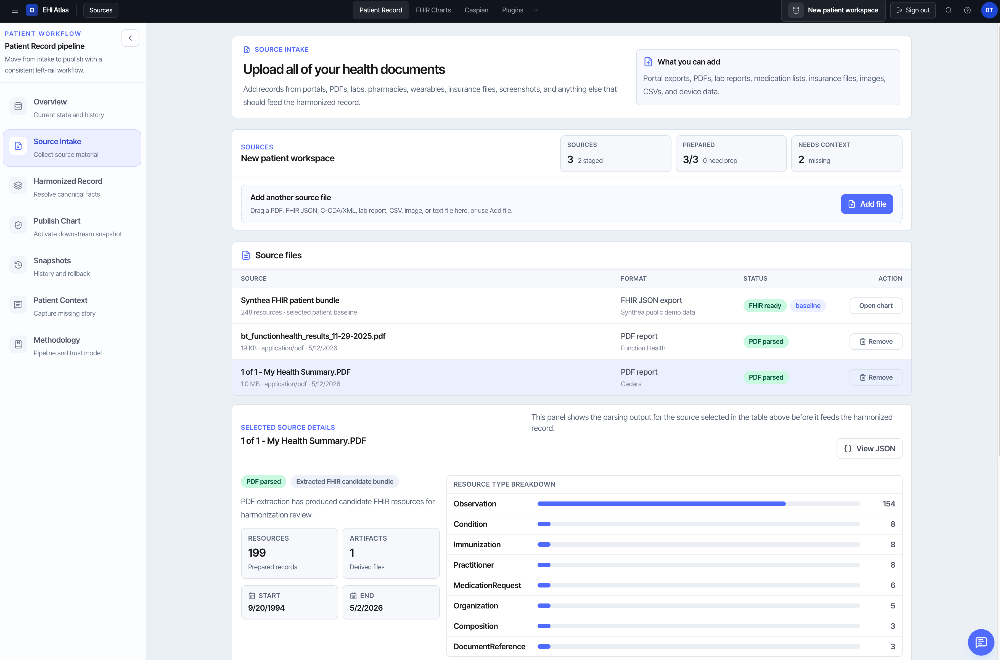
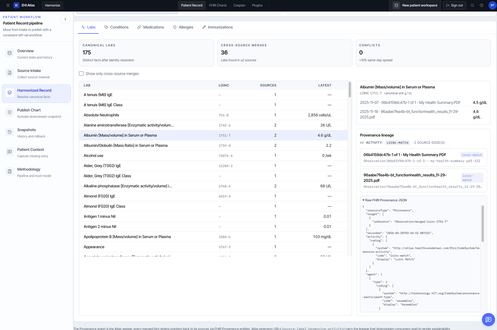
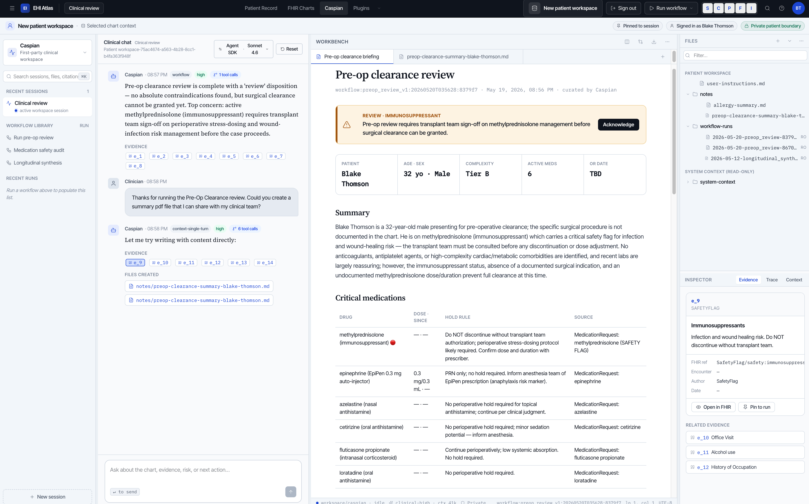
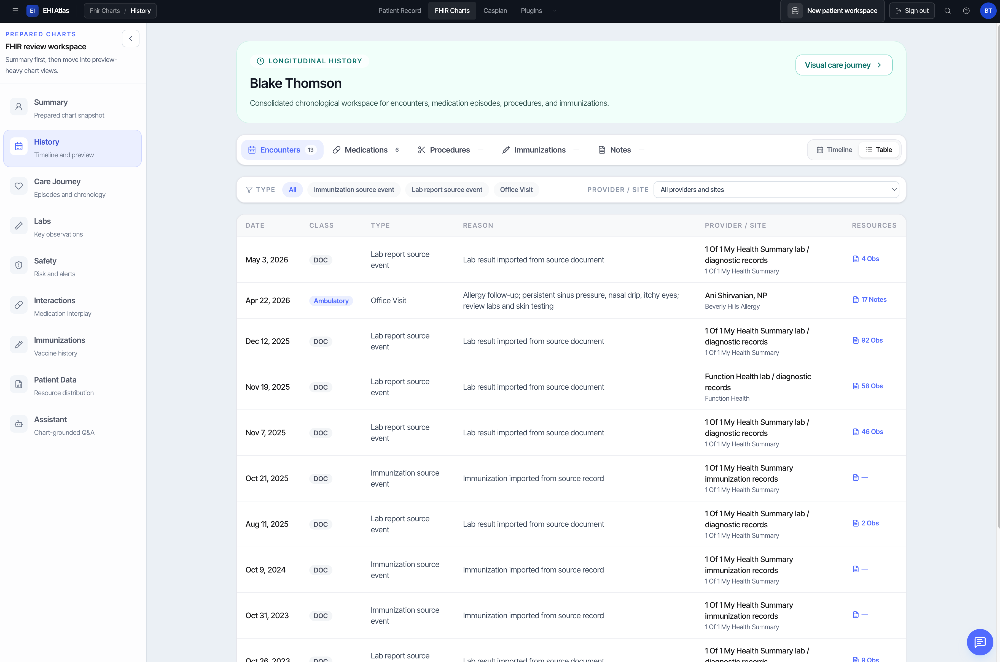
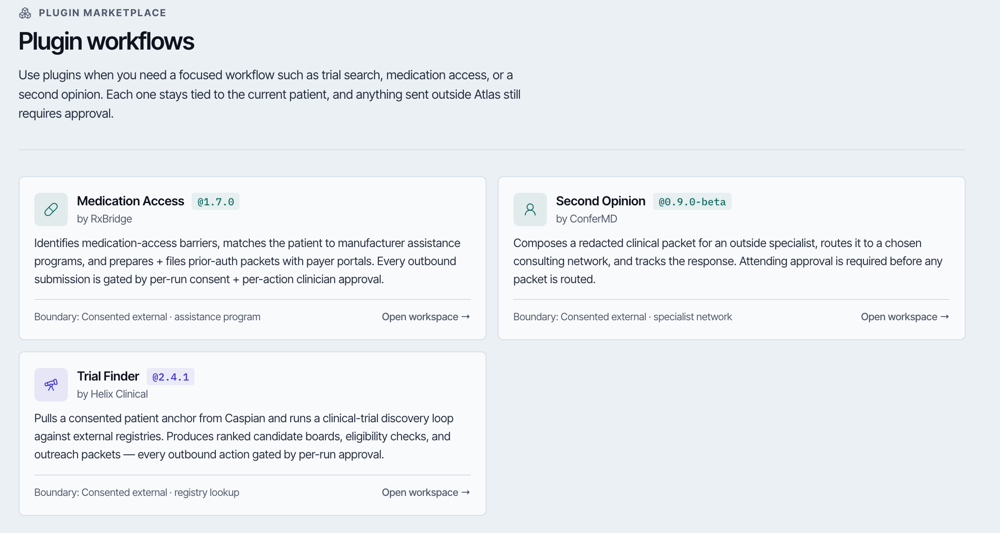
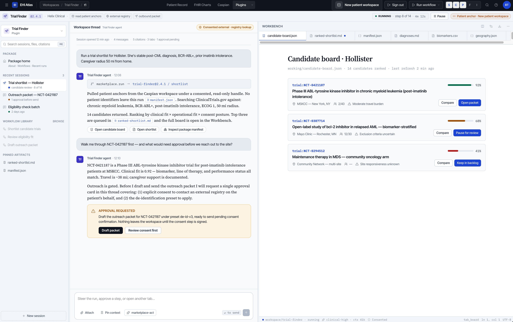

Single Patient EHI exports increasingly exist, but the practical output is still often a folder of files rather than a usable record. Patients, caregivers, and receiving clinicians must still reconstruct the story before they can act.
Atlas has a two-part architecture. First, it builds a harmonized patient record prepared for LLM use with FHIR-based structure and provenance. Second, it exposes that record through an intelligent downstream application environment with chart review, guided workflows, scoped plug-ins, and portable export packages.
What has shipped: a hosted prototype with multi-source intake and harmonization, portable workspace export, Caspian guided review, FHIR Charts, plug-in workflows, and a PDF-to-FHIR extraction lab. Prototype: ehi.healthcaredataai.com.
Patients increasingly can export their records, and LLMs increasingly can draw insights from individual records. The challenge is turning that access and model capability into a record that remains usable, traceable, and trustworthy across high-volume, multi-vendor, mixed-format data.
Raw-record review is now the baseline, not the solution. Patients can increasingly download records and frontier models can increasingly summarize a clean export, but that does not by itself create a dependable record for repeated use. It does not automatically produce a durable record layer for future charts, workflows, plug-ins, or outside harnesses.
Multi-source records do not assemble themselves. The same patient history is scattered across FHIR bundles, C-CDA documents, PDFs, portal exports, and scanned artifacts. Duplicate, conflicting, or partial facts require reconciliation before the record can support review or downstream use.
Provenance and evidence citation are still missing. Even when a model gives a good answer, the user still needs to know which source supported it, what evidence was missing, and whether the claim can be audited later. In clinical settings, a summary that cannot show its work is not enough.
Our own review work raised the bar for this submission. On clean records from major vendors, a simple pipeline such as `pdftotext` plus a frontier model can already perform impressively well for conversational questions. Atlas should not be framed as a tool for documents that no model can read.
What this means for Atlas: the real question is whether a harmonized FHIR data structure purpose-built for LLM ingestion can outperform generic harnesses when data is mixed-format, repeatedly reused, expected to stay traceable, and meant to support more than a one-time answer.
Atlas is a two-pronged solution. First, it creates a patient-owned data layer that aggregates and harmonizes records into canonical facts with provenance. Second, it provides application surfaces built on top of that layer for guided review, charting, scoped workflows, and portable export.

Atlas ingests FHIR bundles, C-CDA, PDFs, and portal exports; normalizes them into canonical facts; and emits a FHIR-based output model with provenance so the record can travel beyond one interface.
The prepared record powers Caspian guided review, FHIR chart surfaces, scoped plug-ins such as Trial Finder and Medication Access, and export packages designed for downstream harnesses.
Users start by feeding Atlas the records they already have. A patient or caregiver can upload portal exports, PDFs, FHIR files, C-CDA documents, labs, and related artifacts into one intake workflow instead of treating each file as a separate review project.
Atlas then converts diverse inputs into one harmonized FHIR-based structure. FHIR bundles can be parsed directly, C-CDA sections can be mapped into the same fact model, and PDFs can run through a PDF-to-FHIR parser so the output becomes chart-ready structure rather than document prose.
Harmonization, provenance, and citations are first-class parts of the output. Atlas does not stop at extraction. It reconciles overlapping facts, preserves provenance edges, and carries forward citation-ready source links so downstream summaries, charts, and workflows can show their work.
Patient-shared context can enhance the prepared record. Atlas can guide patients through structured prompts that ask for goals, personal descriptions, missing history, care-journey notes, and sharing intent. Those inputs are captured as part of the record so qualitative context sits next to formal EHI rather than outside it.
LLM-guided preparation can add reusable qualitative structure. Atlas can build care-journey summaries, workflow-specific context packets, and qualitative handoff notes that help downstream charts, reviews, and plug-ins work from the same enhanced dataset.
Atlas creates an export package specifically for LLM utilization. The package includes canonical facts, provenance, source contributions, missing-information signals, context packets, scripts, and harness instructions so a language-model workflow can pick up the prepared record and start using it immediately. This makes the result portable structure, not just a one-time answer, and supports downstream applications and model harnesses through reusable context-and-script conventions similar to Josh Mandel's health-skill style packaging.
Future state: Atlas should build on these ingestion, harmonization, provenance, and export rails to support more continuous access and update flows, so the prepared record can stay current instead of being rebuilt only at the moment of export.
Caspian is Atlas's agentic harness and patient-data-safe clinical workspace. It is the environment where we are experimenting with the tight coupling between curated FHIR data, agent runtimes, prepared workflows, evidence boundaries, and user interface design. Rather than treating the model as a detached chatbot, Caspian treats the prepared patient record as the center of a guided workspace.
Caspian's value is workflow, evidence boundaries, and reviewability. We are testing multiple harness patterns around this workspace, including Claude Code SDK-style behavior, Cursor-like harness patterns, and our own first-party orchestration, but the product we are actually building is the tightly integrated workspace around the prepared record. Within that workspace, users can run pre-developed clinical workflows such as pre-op clearance review, longitudinal synthesis, and medication safety review; inspect the evidence used; and create files and outputs that remain tied to the patient-data-safe environment.
FHIR Charts gives the platform a clinical chart-review surface. It is less about agent orchestration and more about giving users direct structured views over encounters, medications, conditions, labs, and care events. This matters because the platform should support traditional chart review and structured computation in addition to guided workflows and narrative Q&A.
Plug-ins extend Atlas into a bounded ecosystem of downstream actions. The broader vision is not one monolithic assistant, but an ecosystem of agentic workflows and processes built directly on top of patient data in the platform. Atlas acts as the gateway between the patient record and external modules: users can specify which plug-ins receive which prepared data, and each plug-in stays within explicit approval and data-sharing boundaries before information leaves the workspace.
Our team has already started to de-risk the end-to-end workflow. We have demonstrated multi-source intake, harmonized record construction, guided review, chart surfaces, plug-in workflows, export packages, and PDF-to-FHIR experimentation in one working prototype. The largest areas still to improve are in the harmonization and enhancement layer, especially PDF extraction and normalization, but the core architecture has already been proven across the main workflow stages.
FHIR is the current base output data model, but it is also a technical question. Atlas uses FHIR-compatible resources as the base of its structured output model because Observations, Conditions, MedicationRequests, Encounters, DocumentReferences, and Provenance provide a standards-aligned substrate for downstream tools. At the same time, one open feasibility question is whether FHIR is the best structure for LLM ingestion directly, or whether Atlas should continue building additional LLM-ready layers on top of FHIR.
Source-specific ingestion is feasible, but accurate parsing into FHIR remains the core technical challenge. Known pipelines can help with FHIR bundles and C-CDA-style records, but Atlas has also been building the PDF-to-FHIR parser because PDF ingestion is where much of the hard work lives. The challenge is not merely reading the document; it is converting it into reliable, chart-ready FHIR output with the right dates, units, identities, and source locators.
FHIR-based outputs and harmonization make the approach portable across settings. Atlas focuses on harmonizing existing records into one transparent structure instead of inventing a closed proprietary format. That makes the system easier to extend across vendors, care settings, and downstream applications.
Harmonization, provenance, and citations support scalable trust. As Atlas expands across more sources and workflows, the system can still show which facts were merged, where they came from, and how they should be audited. That makes scale more credible because outputs remain inspectable rather than collapsing into opaque summaries.
Export packages make the structure scalable beyond one interface. The same prepared record can travel into handoffs, charts, context packets, and outside harnesses, which means Atlas scales through structured outputs and adapters rather than through one fixed UI.
Privacy and safety posture: Atlas is designed around patient boundaries, transparent data ownership, minimum-necessary evidence for AI, and approval gates before plug-ins send information into external systems. A stronger future-state privacy layer would deepen consent controls, auditability, and continuous update handling as the platform expands.
Strong frontier models can already read clean medical files. The innovation in Atlas is not “AI reads records.” The innovation is the patient-owned, portable record layer that makes those models and other tools more reusable, more traceable, and more useful across repeated clinical tasks.
| Dimension | Generic raw-file harness | Atlas record layer |
|---|---|---|
| Asset created | Often produces a one-off answer or summary tied to the current prompt. | Produces a harmonized FHIR record layer plus downstream summaries, charts, and export artifacts. |
| Portability | Each new tool or reviewer may need to start over from raw files. | The prepared record can travel across Caspian, charts, plug-ins, export packages, and future harnesses. |
| Provenance | Citations may be approximate and reconstructed after the answer. | Facts carry provenance by design, with explicit source contribution and harmonization lineage. |
| Cross-source reasoning | Can synthesize, but deduplication and conflict handling are not durable system functions. | Harmonization and comparison are first-class parts of the record model. |
| Chart-ready output | Often returns prose that must be restructured later. | Produces canonical facts that can directly support chart views, handoffs, CSV exports, and FHIR outputs. |
| Repeatability | The same file may be parsed differently across runs or prompts. | Facts are structured once, then reused across tasks with more consistent behavior. |
Atlas should be tested directly against Claude Code and Codex-style raw-file harnesses. The expected win is not “Atlas beats them at everything.” The expected win is in provenance, repeatability, cross-source reconciliation, chart-ready output, and portable structured export that remains useful after the first answer is generated.
These wireframes show the first half of the solution: Atlas collects source files, stages them into a review workflow, and then harmonizes them into canonical facts with provenance.


These application surfaces show how the prepared record becomes useful in practice. Caspian runs pre-guided clinical workflows over the record, while FHIR Charts turns the same facts into a longitudinal review surface.


Atlas also supports plug-ins that engage with the external world in a scoped way. These are not generic chat tools. They are bounded workflows tied to the current patient record, approval gates, and specific downstream actions.


Atlas aims to improve the usability of patient exports for the people who currently do the hardest work around them: patients and caregivers trying to assemble a record, clinicians trying to make a decision quickly, and downstream tools that need something more reliable than a one-time summary.
Atlas gives the patient a record they can carry forward instead of repeatedly rebuilding the story from portals, PDFs, and attachments. That matters for second opinions, specialist preparation, caregiver coordination, and any care transition where the patient is forced to become the integrator of their own record.
Atlas is designed to surface the five most relevant facts quickly while still showing the underlying evidence. That means less time spent reconstructing histories from narrative exports and more confidence that high-signal summaries, chart trends, and workflow outputs remain tied to the source record.
By using FHIR as the structured output model, Atlas turns EHI movement into a reusable evidence layer. That layer can support charts, guided review, plug-ins, export packages, and outside harnesses without reparsing the raw record every time a new interface or model appears.
Blake Thomson brings healthcare data strategy and business development experience from Cedars-Sinai, with work focused on claims data, referral ecosystems, provider networks, and translating complex healthcare data into operational strategy. This submission combines healthcare domain understanding with hands-on prototyping in FHIR modeling, harmonization, PDF extraction, clinical context engineering, plug-in workflow design, and patient-facing health information design.
The current prototype direction was shaped by fast specialist chart review and by the practical experience of moving between raw source files, structured facts, and clinical questions. That grounding led to Atlas’s emphasis on provenance, portable output, bounded AI context, patient-controlled sharing, and pre-guided workflows such as pre-op review and trial matching.
Atlas is designed around that goal. By separating the durable patient-owned record layer from any one interface or model, it aims to make EHI more readable, actionable, and trustworthy across settings.